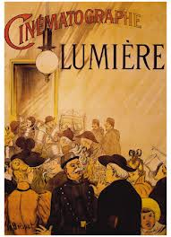

On date la naissance du cinéma à la première projection publique donnée par les frères Lumière au Salon indien du Grand café de Paris le 28 décembre 1895. Pourtant le 22 mars 1895, dans les locaux de la Société d'encouragement pour l'industrie nationale à Paris, a eu lieu la première représentation du premier film des deux inventeurs : La Sortie de l'usine Lumière à Lyon.
Les films produits jusqu'en 1927 sont dépourvus de piste sonore, mais la synchronisation du Cinématographe et du Phonographe est audible et visible dès l'Exposition universelle de 1900. Les travaux de Thomas Edison, inventeur du phonographe en 1877, inspirent par la suite Auguste Baron qui fait breveter en 1896, un système permettant d'enregistrer isolément le son et l'image et de les synchroniser lors de la projection.
| Année | Titre | Réalisateur |
|---|---|---|
| 1953 | Les Vacances de monsieur Hulot | Jacques Tati |
| 1976 | La Dernière folie de Mel Brooks | Mel Brooks |
| 2011 | The Artist | Michel Hazanavicius |
